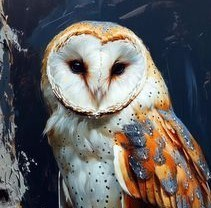
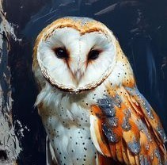

Brazilian folklore is the set of cultural manifestations that characterise national identity. It is the result of the miscegenation of the people who inhabited Brazil, such as indigenous people, Africans and Portuguese.
Brazilian folklore includes tales, legends, songs, rhythms, music, popular festivals, literature, cuisine, games, dances and other traditions that are passed down from generation to generation, however we will focus more on the tales and myths of Brazilian folklore. To learn more about them, here are some of the most popular tales from this folklore.